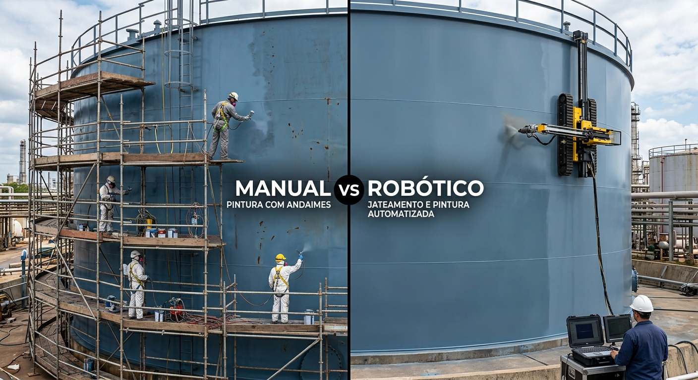
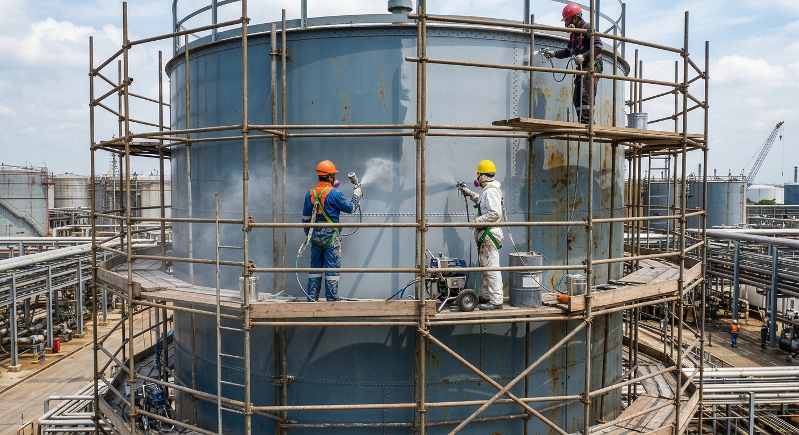
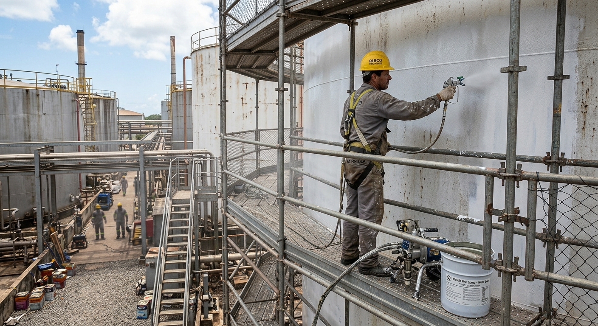
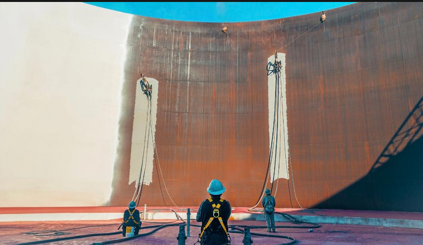
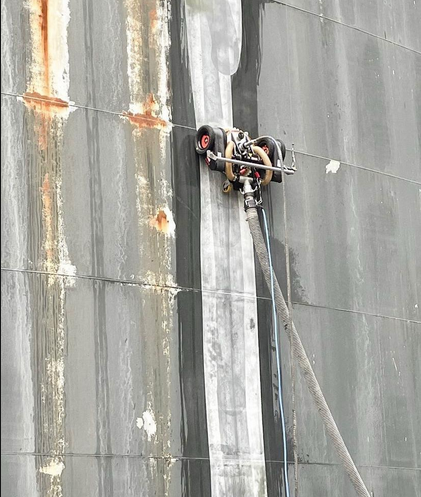
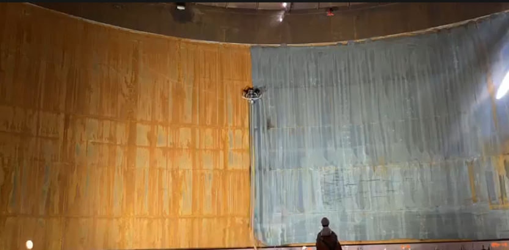
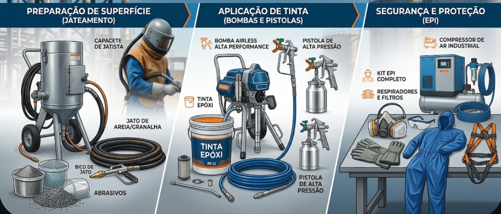
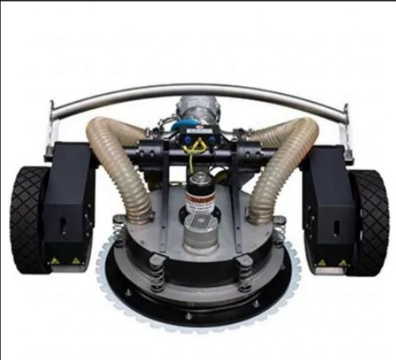

TECNOLOGIA INDUSTRIAL
Automação, segurança e precisão aplicadas aos processos de jateamento e pintura industrial.
PROCESSO INDUSTRIAL

A pintura de tanques é realizada por profissionais qualificados para trabalho em altura, conforme a NR-35, utilizando os EPIs e equipamentos adequados, incluindo pistola de pintura. A produtividade média é de aproximadamente 1 hora para a execução de determinada área em m², conforme as condições do serviço.
Além do tempo de aplicação da tinta, deve-se considerar o período necessário para montagem, inspeção e desmontagem dos andaimes, etapas que podem demandar tempo significativo, principalmente em tanques de grandes dimensões. Dessa forma, o tempo total da atividade envolve tanto a execução da pintura quanto a preparação e os meios necessários para garantir o acesso seguro às áreas de trabalho.
PROCESSO CONVENCIONAL

a operação demanda montagem, inspeção, movimentação e desmontagem dos andaimes, etapas que podem representar parcela significativa do tempo total do serviço, principalmente em tanques de grandes dimensões.
O método manual também apresenta riscos ocupacionais, como quedas de altura, exposição a produtos químicos, inalação de vapores e névoas de tinta, contato com substâncias químicas e riscos ergonômicos decorrentes de movimentos repetitivos e posturas inadequadas.
Para o meio ambiente, devem ser considerados os impactos relacionados à emissão de partículas e vapores, geração de resíduos contaminados, sobras de tinta, solventes e embalagens, exigindo controle e destinação adequada.
TECNOLOGIA
O robô de jateamento e pintura é uma solução tecnológica que proporciona maior segurança, agilidade, produtividade e padronização ao processo de pintura de tanques.
O equipamento realiza a remoção de ferrugem, tintas antigas e impurezas por meio de jateamento abrasivo em circuito fechado ou hidrojateamento de alta/ultrapressão (UHP), além de aplicar a tinta de forma uniforme, com controle de fluxo e velocidade.

DIFERENCIAIS

Automação voltada para aumentar a padronização e reduzir a exposição direta dos profissionais.
O sistema também permite a medição da espessura da camada aplicada,
proporcionando maior controle da qualidade do revestimento.
Dependendo das condições de operação, os robôs magnéticos escaladores podem atingir
velocidades de 1 a 5 m/min e produtividade aproximada de 40 a 80 m²/h,
podendo alcançar valores superiores em aplicações específicas.
A automação reduz a exposição dos trabalhadores ao trabalho em altura e aos agentes químicos, além de diminuir o tempo de execução e proporcionar maior uniformidade na aplicação do revestimento.
OPERAÇÃO
O processo é configurado de acordo com as características da superfície e da operação.
Instalação e posicionamento do equipamento.
Definição dos parâmetros necessários para a execução.
Realização automatizada do processo de jateamento ou pintura.

COMPARAÇÃO

PROCESSO CONVENCIONAL
No método manual, considerando a estimativa preliminar de 6 m² a cada 2 horas para uma equipe de quatro profissionais, a produtividade é de aproximadamente 3 m²/h. Além da pintura, é necessário considerar o tempo de montagem, inspeção e desmontagem dos andaimes, aumentando o tempo total da operação e a exposição dos trabalhadores aos riscos da atividade.

PROCESSO AUTOMATIZADO
No método automatizado, o robô pode atingir uma produtividade estimada entre 40 e 80 m²/h, dependendo das condições de operação, além de realizar a aplicação de forma controlada e uniforme e permitir o acompanhamento da espessura do revestimento.